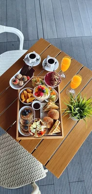
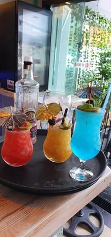
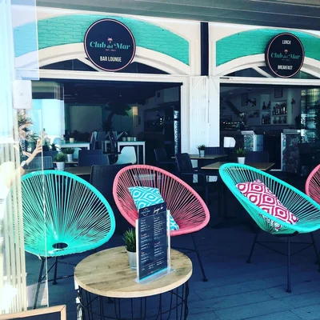
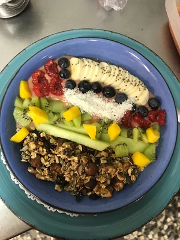
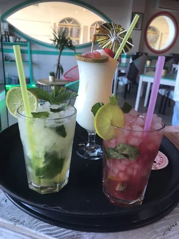
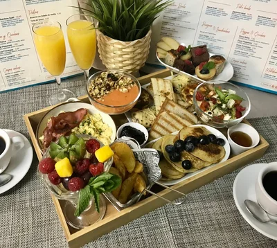

Tripadvisor-led trust
Real public reviews, a 4.8 score and Travellers' Choice positioning anchor the brand in guest proof.
Michelin-inspired hospitality on the Fuengirola promenade
Club Del Mar reimagined as a destination dining address: cinematic, elegant and designed to convert discerning guests from first glance to confirmed reservation.
Social proof
The layout now feels like a hospitality brand, not a review template, while keeping genuine public signals visible and credible.
Real public reviews, a 4.8 score and Travellers' Choice positioning anchor the brand in guest proof.
Real-time map directions, one-tap navigation and a clearer location experience remove booking friction.
Editorial spacing, confident contrast and calm ritual-driven storytelling bring a more premium hospitality tone.
Real food, bar and terrace imagery help the restaurant feel like a place guests want to visit and share.
Wine & cocktail experience
The drinks story now feels premium enough to stand beside the food, not underneath it.
Chef presentation
Instead of reading like a cafe, the story now positions Club Del Mar as a place where brunch, service and atmosphere are composed with intention.
"The idea is simple: plates that feel bright and generous, service that feels calm and a setting guests remember long after the meal."
Kitchen vision, Club Del Mar
Private dining & events
The page now sells occasion dining, not just casual drop-ins.
Branded for client hosting, executive brunches and stylish midday gatherings facing the promenade.
Elegant service, handcrafted drinks and a more premium tone for milestone bookings and late lunches.
Built for visual storytelling, polished arrivals and content-friendly hospitality moments.
Tripadvisor review edit
Review titles, dates and guest origins come from public Tripadvisor material; the body copy below is paraphrased for clarity and presentation.
Highlights standout service, strong breakfast plates and coffee worth planning the morning around.
Read on TripadvisorPraises attentive staff, generous coffee and a seafront setting that feels easy and welcoming for international guests.
Read on TripadvisorCalls out the Belgian touch, polished presentation, fair pricing and one of the strongest spots on this stretch of the promenade.
Read on TripadvisorDescribes fresh, tasteful food, welcoming staff and a beachwalk location guests return to for drinks, coffee or lunch.
Read on TripadvisorGallery
The imagery now feels curated, cinematic and sales-oriented instead of looking like a loose photo dump.






Location, arrival & contact
This part now feels credible and useful instead of illustrative, with live map context and direct actions.
Online table booking
The form stays operational, but the presentation now feels premium enough to belong to a destination restaurant.